Le jeu du chaos
Le jeu du chaos
Le jeu du chaos est une méthode simple et fascinante pour générer des figures fractales, comme le triangle de Sierpinski, à l'aide d'un processus aléatoire. Voici comment il fonctionne :
On commence avec une forme géométrique (par exemple, un triangle) et un point de départ à l'intérieur de cette forme.
Déplacez le point courant à mi-chemin entre sa position actuelle et le sommet choisi.
Répétez les étapes 1 et 2 de nombreuses fois. Les points tracés forment progressivement une figure fractale.
Vous pouvez personnaliser le jeu du chaos en modifiant :